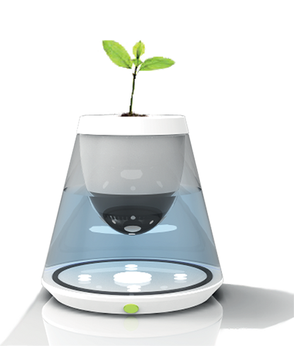

Product Concept
Brief
Life Pot is dedicated to the rememberence of our loved ones who passed away. It is a flowerpot designed to offer a meaningful experience in memorizing our loved ones by pertaining the person's ashes. The growing of the plant symbolizes the continuation of life in another form. The 4 compartments represents essential elements of life: spirit (ashes), air, water and light. Life Pot preserves the energy and memories with the person, and fulfills us with courage, faith and love.

Research & Inspiration
This project about 'Life and Memory' was driven by the research on population density and how human life has been affected by land pollution. In many countries, where population is dense, the use of caskets is unrealistic due to the land restriction and environmental concerns. Despite cultral differences, everyone demands a spiritual place to memorize their deceased loved ones. Many places, death memorials are still being done in traditional ways, and death is considered too morbid an issue to discuss in design. This project challenged me to think and reflect my philosophy of life and death.
There are many life experiences that have given us a sense of connection with nature. Everything in the nature has its own lifecycle: it grows, matures, survives, decays and fades away. It is around us everyday and every moment. We cannot live with out the nature and with no doubt it bears meanings to our life.
Design Philosophy
Life is precious to everyone because it only happens once and time is the medium that lies between life and death. Although our life all ends at one point but time continues. The sorrow we feel may not last a lifetime, but it is the memory and the irreplaceable emotional attachment, we will carry for the rest of our days.
I believe the power of rememberance is incredibly strong that it gives us the courage to face future. Many people memorize their loved ones through objects that have embedded with personal meanings and love. In return, the object provides them with psychological support. Maybe death bears no significance for those who have died, but the memory they leave will always remind us to cherish the time we have left.